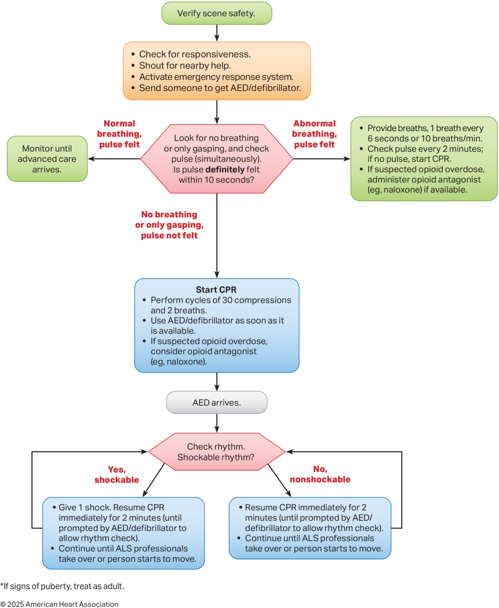
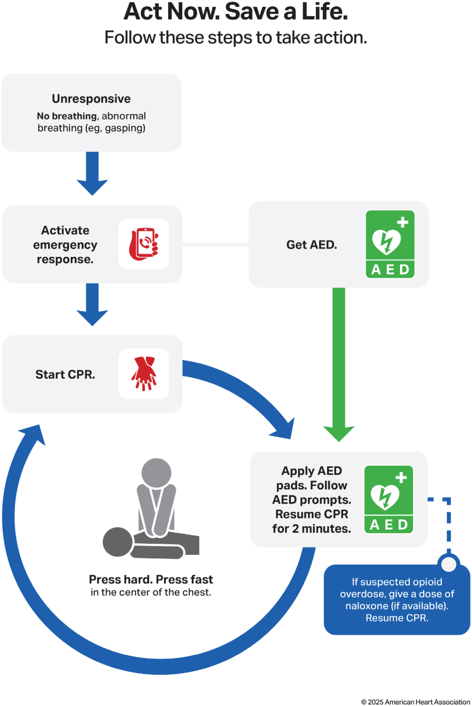
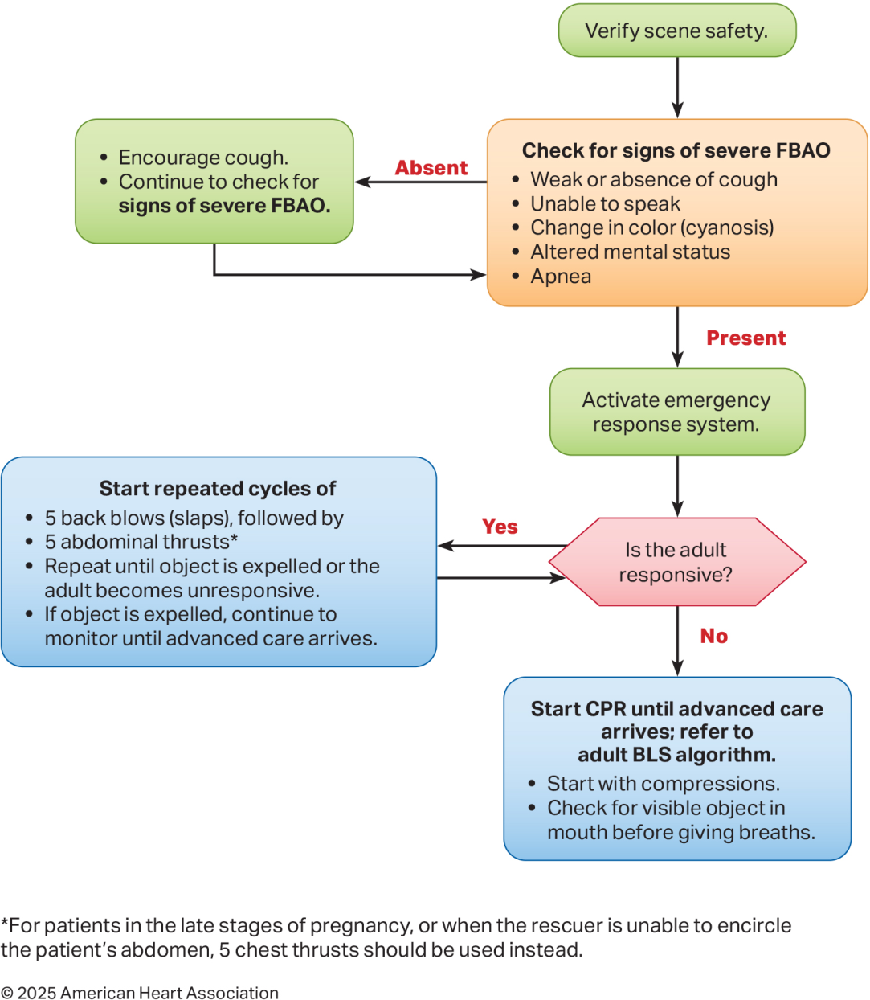
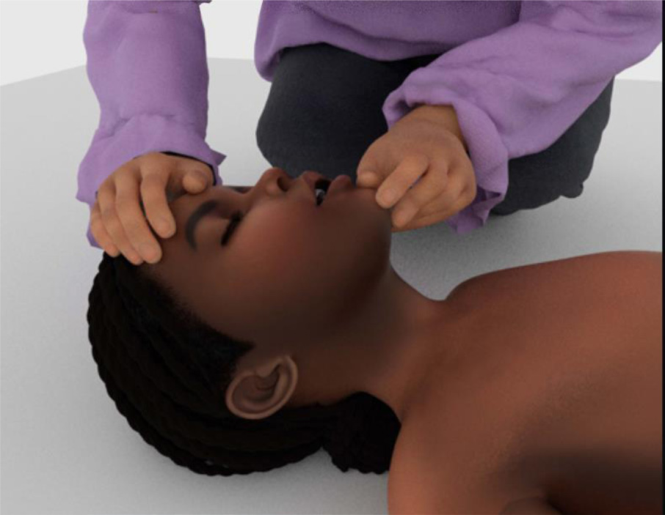
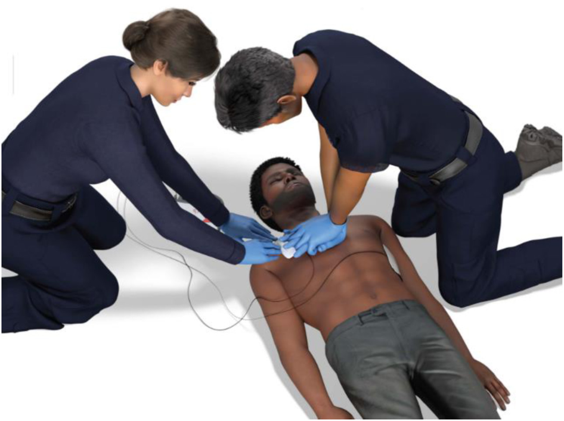
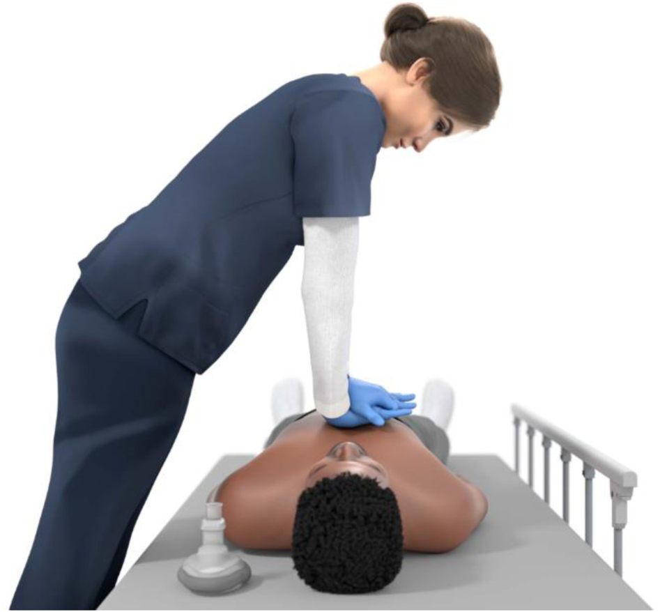
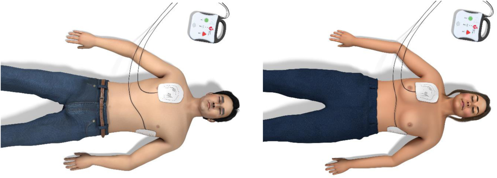

成人基本救命術 2025
2025 AHA 成人 BLS 指引逐條整理。涵蓋辨識心跳停止、啟動緊急應變、高品質 CPR、AED 使用、通氣與呼吸道異物哽塞（FBAO）。有青春期徵象的病人，一律依成人指引處理。
出處：Kleinman ME, et al. Part 7: Adult Basic Life Support. Circulation. 2025;152(suppl 2):S448–S478. doi:10.1161/CIR.0000000000001369。圖片截自原文 PDF（© 2025 American Heart Association），僅供教學使用。
Top 10 帶回家的重點
- 成人心跳停止，原則上就地急救，只要能安全、有效地做高品質 CPR。
- 確認成人心跳停止後，單獨一位施救者先啟動緊急應變系統，再立刻開始 CPR。
- 按壓時，病人的軀幹高度約在施救者膝蓋的高度。
- 醫護人員對所有成人心跳停止（無論心因性或非心因性），做按壓加通氣是合理的。
- 通氣量給到看得見胸部起伏即可，避免通氣不足與過度通氣。
- 不建議常規使用機械 CPR 裝置。
- 沒有正常呼吸但有脈搏：每 6 秒 1 次通氣（每分鐘 10 次）。
- 肥胖病人的 CPR，技術與一般體重病人相同。
- 成人嚴重 FBAO：5 次背擊後接 5 次腹戳，反覆循環，直到異物排出或病人失去反應。
- 成人心跳停止 CPR 時，施救者使用個人防護裝備（PPE）是合理的。
流行病學與 2030 目標
美國資料| 項目 | 數字 | 說明 |
|---|---|---|
| OHCA 年發生數（EMS 處理） | 356,000 | 約每 10 萬人 83 例，各州差異大；COVID-19 期間存活率下降 |
| OHCA 存活出院（CARES 2024） | 10.5% | 神經學預後良好約 8.2%；CARES 涵蓋 37 州、約 56% 美國人口 |
| 發生在公共場所 | 18% | 多數發生在住家 |
| 旁觀者 CPR 比率 | 47.7% | 地區、種族、性別、社經地位間有明顯差異 |
| 旁觀者使用 AED | 7.9% | |
| IHCA 年發生數 | 292,000 | 約 60% 在加護病房、急診、手術室等急性照護區；40% 在一般病房 |
| IHCA 存活出院 | 26.7% → 18.8% → 23.6% | COVID-19 前 → 疫情低點 → 2023 年 |
| 民眾持有有效 CPR 訓練（2015） | 18% | 弱勢與低收入族群更低 |
早期高品質 CPR 與及時電擊，是與成人心跳停止預後改善最相關的介入。辨識、啟動緊急應變、按壓與通氣、AED 電擊，構成生存之鏈的前幾環，要先做好，病人才能從後續進階治療受益。
這份指引怎麼產生、適用範圍
- 取代 2020 版成人 BLS 指引（除非另有註明）。依據 ILCOR 2020–2024 年 CoSTR 的系統性回顧、範圍回顧與證據更新。
- 沒有重新做證據回顧的主題，沿用 2020 年建議與支持文字，各節摘要會註明（本網站標為「沿用 2020」）。
- 適用對象：未受訓與受過訓練的民眾、醫護人員。處理心跳停止，也處理呼吸停止與 FBAO。
- 有青春期徵象者依成人指引；兒童見 Part 6 Pediatric BLS。鴉片類藥物的細節見 Part 10 Special Circumstances。
- 建議表格的排列順序依 COR 再依 LOE，不代表急救步驟順序；步驟順序請看演算法。
- 2025 年三張演算法：醫護人員版（新增鴉片類拮抗劑，用於呼吸停止與心跳停止）、新的民眾版、新的成人 FBAO 版。
演算法
Figure 1–3確認現場安全
- 檢查反應
- 大聲呼叫附近的人幫忙
- 啟動緊急應變系統（台灣撥 119／院內急救代碼）
- 派人去拿 AED／去顫器
同時看呼吸、摸脈搏
沒有呼吸或只有喘息？10 秒內有沒有明確摸到脈搏？- 給予通氣：每 6 秒 1 次（每分鐘 10 次）
- 每 2 分鐘檢查脈搏；沒脈搏就開始 CPR
- 疑似鴉片類過量：有的話給拮抗劑（如 naloxone）
開始 CPR
- 30 次按壓 + 2 次通氣，反覆循環
- AED／去顫器一到立刻使用
- 疑似鴉片類過量：考慮給予拮抗劑（如 naloxone）
AED 到達 → 分析心律：可電擊嗎？
- 電擊 1 次，立刻恢復 CPR 2 分鐘（直到 AED 提示分析心律）
- 持續到 ALS 人員接手或病人開始活動
- 立刻恢復 CPR 2 分鐘（直到 AED 提示分析心律）
- 持續到 ALS 人員接手或病人開始活動
＊有青春期徵象者，依成人處理。兩條分支都回到「分析心律」形成循環。

沒有反應；沒有呼吸或呼吸異常（例如喘息）
貼上 AED 貼片，照 AED 指示做
恢復 CPR 2 分鐘
確認現場安全
有沒有嚴重 FBAO 的徵象？
咳嗽無力或咳不出來 · 無法說話 · 膚色改變（發紺）· 意識改變 · 呼吸停止- 鼓勵咳嗽
- 持續觀察是否惡化成嚴重 FBAO
- 啟動緊急應變系統
- 評估病人有沒有反應
- 5 次背擊，接著 5 次腹戳，反覆循環
- 直到異物排出或病人失去反應
- 異物排出後持續監測，直到進階救護到達
- 開始 CPR，從按壓開始，參照 BLS 演算法
- 給通氣前，先看嘴裡有沒有看得到的異物
- 持續到進階救護到達
＊懷孕後期，或施救者無法環抱病人腹部時：改用 5 次胸戳取代腹戳。

辨識心跳停止與開始急救
辨識心跳停止
證據與細節：瀕死喘息（agonal breathing）
- 瀕死喘息是緩慢、不規則的喘氣，無法有效通氣。民眾常形容成「呼吸怪怪的」、「打呼」、「喘」。
- 出現在 40%–60% 的 OHCA，心跳停止越久越少見。
- 它是民眾誤判「不是心跳停止」的常見原因，造成按壓延誤。
- 對沒有心跳停止的昏迷病人按壓，造成傷害的風險很低；對真正心跳停止的人按壓，好處遠大於風險。
- 醫護人員常常摸脈搏摸太久，也常判斷錯誤。但看呼吸、咳嗽、肢體動作也沒有比摸脈搏更準。
民眾（未受訓或受過訓練）開始急救
證據與細節
- 日本全國推廣「只按壓 CPR」後，神經學預後良好的存活率上升，可能是因為願意出手的民眾變多。
- 大型觀察性研究（N=17,461）：先 CPR 再撥號 vs 先撥號再 CPR，存活出院沒有差異。指引選擇先撥號，是看重及早派遣和線上指導 CPR 的價值。
- 手邊沒有手機時，要不要先去求救再回來 CPR，視當地狀況決定，但要強調及時 CPR 的重要。
- 按壓 + 通氣 vs 只按壓：多數觀察性研究與一個大型 RCT 次級分析顯示加通氣預後較好，也有研究無差異。
- PPE：2023 年系統性回顧，穿 PPE 對存活（1 個臨床研究）與 CPR 品質（17 個假人研究）沒有影響，但其中 2 個研究顯示疲勞度較高。穿戴 PPE 可能延誤開始 CPR。CPR 屬於會產生氣溶膠的處置。
醫護人員開始急救
證據與細節
- 假人研究：先按壓比先通氣更快開始按壓、更快給通氣、更快完成第一個循環。
- 只按壓不通氣時，動脈血含氧量會隨 CPR 時間下降；窒息性心跳停止（例如溺水、呼吸衰竭）更需要通氣。
- 單人醫護：開始按壓後，用口對面罩或 BVM 給通氣。
打開呼吸道

鼻咽呼吸道（NPA）：懷疑顏面外傷；已知或疑似顱底骨折、嚴重凝血異常時，改用口咽呼吸道（曾有 2 篇個案報告 NPA 插入顱內）。
口咽呼吸道（OPA）：作嘔反射還在時不要用。
放錯位置反而會把舌頭推向後方，造成阻塞。
證據與細節
- 壓額抬下巴的效果來自非心跳停止與影像學研究；沒有研究在心跳停止中比較它和其他手法。
- 一個回溯性研究：院內心跳停止時，呼吸道輔助器搭配 BVM，神經學預後較好。
- 環狀軟骨壓迫（cricoid pressure）：沒有證據能幫助通氣或減少吸入；系統性回顧顯示無法減少吸入，還可能妨礙放置進階呼吸道、阻礙 BVM 通氣時的氣流。
頭頸部外傷 沿用 2020，無新證據
高品質 CPR
位置與姿勢


證據與細節：高度、手的位置、就地急救、俯臥
- 高度：多個交叉 RCT 假人研究，跪在地上或跪在床上比站著按壓更深。病人軀幹低於施救者膝蓋不超過 10 cm 時深度較好。踩踏腳凳比站著好，但跪姿的深度與回彈又略優於腳凳。
- 跨坐：在移動中的推床上，跨坐與跪姿效果相近、優於邊走邊壓，但要權衡施救者的安全與穩定。狹窄空間中（n=124 RCT），跨坐沒有比側邊按壓好。
- 手的位置：2 個研究顯示壓胸骨下 1/3 比壓胸骨中段有較好的生理參數（動脈壓、EtCO₂），1 個無差異。影像研究顯示左心室多在兩乳頭連線下方，對應胸骨下半部；但壓太低會壓到劍突，效果較差。
- 慣用手：一個 RCT（n=101）和一個觀察性研究（n=225）顯示慣用手貼胸骨時按壓品質較好；另一個小型 RCT（n=59）改善未達顯著。
- 就地急救：T-CPR 研究中，41% 的個案因為搬移病人而延誤 CPR（多因施救者體力限制），存活出院機率明顯較低。這條建議不涉及「何時送醫」的決定。
- 硬板面：院內建議使用背板；把氣墊床放氣或啟用床的「CPR 模式」可增加深度；地板是最理想的硬面。
- 俯臥：2021 年 ILCOR 回顧 20 位在手術室或加護病房俯臥時心跳停止的成人。12 位直接俯臥 CPR，全部 ROSC 並存活出院；8 位先翻正再 CPR，ROSC 37.5%、存活出院 29%。
按壓中斷與 CCF
證據與細節
- 整體 hands-on time（CCF）越高，存活越好；電擊前後暫停越短，ROSC 越好。
- 電擊後立即按壓：2 個 RCT（>1000 人）顯示電擊後停下來看心律，存活沒有比較好；觀察性研究顯示沒有立刻恢復按壓時 ROSC 下降。
- 換手：按壓深度在 90–120 秒後開始變淺，速率則變化不大。每 1 分鐘換 vs 每 2 分鐘換，高品質按壓比例沒差；選 2 分鐘是因為剛好配合心律分析的暫停。
- 新證據：ROC 資料分析發現，30:2 的暫停中，不到一半的暫停有給到有效通氣。有效通氣比例低的病人，ROSC、存活出院、神經學預後都較差。
- CCF ≥60% 與較好預後相關，但研究異質性大，也有研究顯示 CCF 高反而存活較差。CCF 60% 是最低目標，高效團隊可達 >80%。
- CPR 中只該為「已證實能改善預後」的處置而中斷；目前資料不足以支持或反對在 CPR 期間摸脈搏（在沒有侵入性監測的環境）。
按壓深度、速率與回彈
證據與細節
- 深度：2020 ILCOR 範圍回顧（12 個研究、>10,700 位病人）。深度 ≥5 cm 比 <4 cm 存活出院較好；>6 cm 存活較差。
- 速率：3 個研究（>13,700 人）顯示 100–119/min 存活出院最好。一個 RCT 比較 100 vs 120/min 無差異。一個研究（n=222）121–140/min 的 ROSC 較好，但寫作小組更看重存活而非 ROSC。
- 回饋裝置：2024 ILCOR 範圍回顧肯定先前建議。統合分析顯示回饋裝置與 ROSC、存活出院改善相關（神經學預後無差異）。一個 IHCA RCT 用聲音回饋深度與回彈，存活出院改善 25.6%。
- 回彈：按壓放鬆速度（release velocity）的兩個研究結果不一致（其一顯示 >400 mm/s 存活較好）。豬隻研究顯示「靠在胸口上」（leaning）會降低冠狀動脈灌流。
- Duty cycle：2020 年建議 50%（按壓與放鬆時間相等），主要是因為好執行。一個 VF 院外研究（43% 存活出院）觀察到平均 duty cycle 39%。動物研究多顯示 <50% 較好，但最佳值未知，暫不改變建議。
通氣與按壓通氣比
心跳停止時的通氣基本原則
證據與細節：潮氣量、BVM 技巧、成人球
- 口對口：打開呼吸道、捏住鼻子、嘴巴密合、吹氣。使用屏障時，口袋型面罩比面膜（face shield）有效。BVM 或部分口袋面罩可加接氧氣。
- 插管成人要看到胸部起伏，需要約 362–406 mL（約 5–7 mL/kg）。
- 連續按壓時看不到胸部起伏；30:2 的暫停才能觀察。
- 用兒童用球給成人通氣常漏氣、潮氣量不足；使用成人用球與較高 ROSC 相關。
- 雙手壓面罩加推下顎，優於單手 E-C 法（拇指與食指成 C 形壓住面罩，其餘三指成 E 形勾住下顎）。兩位施救者時：一人雙手封面罩，另一人（可以是按壓者）在 30:2 的暫停擠球，兩人都要看胸部起伏。
- 只有一位施救者：可用雙手壓口袋面罩吹氣；若用 BVM，只能用單手封面罩。
- 施救者吸一口正常的氣而不是深吸，避免自己頭暈，也避免病人肺部過度膨脹。每口 1 秒是為了縮短按壓暫停。
- 過度通氣：胃脹氣、嘔吐、吸入、心輸出量下降。通氣不足：存活下降。兩者都有害。
特殊情況的通氣 沿用 2020，無新證據
因外傷、姿勢或封不住嘴巴時，可改用口對鼻（個案系列顯示可行、安全、有效）。氣切造口的病人若無法從口鼻通氣，可經造口通氣；用圓形兒童面罩蓋住造口比標準面罩更密合。氣切管路本身的處理不在本指引範圍。
有脈搏、呼吸停止
證據與細節
- 14 位全身麻醉、吸室內空氣的病人，呼吸停止 90 秒內血氧平均降到 62.1%（43.9%–81.9%）。
- 2024 年溺水指引：在心跳停止前就在水中給予呼吸支持，預後比上岸後才 CPR 好。
- PreVent RCT：重症呼吸停止病人插管前，以每分鐘 10 次、看得到胸部起伏的 BVM 通氣，嚴重低血氧事件較少。
- 院內研究：低碳酸血症（通氣過多）、嚴重高碳酸血症（通氣過少）、兩者來回擺盪（通氣不穩定），1 個月神經學預後都比輕度高碳酸血症差。
按壓：通氣比
證據與細節：為什麼還是 30:2
- 多數研究顯示連續按壓與 30:2 的預後無差異。
- 民眾施救的統合分析（4 個 RCT）中，中斷式 CPR 存活較差，但其中 3 個研究用的是 15:2。
- 院前醫護人員做 30:2，比連續按壓加非同步通氣有較高的 ROSC、到院存活、神經學預後良好（存活出院無差異）。
- ROC 連續按壓試驗回溯分析（26,810 位無進階呼吸道的非外傷 OHCA）：依計畫執行時，EMS 連續按壓加非同步通氣的存活低於 30:2；補值後整體差異不顯著。
- 關鍵理由：連續按壓時看不到胸部起伏，無法確認通氣是否足夠，而新證據顯示通氣量常常不足。所以寫作小組重視 30:2 能觀察胸部起伏的優點。
電擊與 AED
貼片位置

證據與細節
- 前側–側邊、前–後、前–左肩胛下、前–右肩胛下四種位置，治療心室上或心室性心律不整的效果相當。
- 前後研究（207 位病人、1,023 次電擊）：前側–側邊 vs 前–後的電擊成功率 82.1% vs 82.2%。
- 另一研究：前–後位 ROSC 較高（OR 2.64；95% CI 1.50–4.65），但存活出院與神經學預後無差異；偏差風險大，寫作小組認為需要更多研究。
- 貼片直徑 8–12 cm 範圍內越大，阻抗越低。自黏貼片已大致取代電擊板。
- 胸罩：2024 ILCOR 範圍回顧，證據不足以支持常規脫除。豬隻研究（會議摘要）中 AED 貼片直接貼在胸罩鋼圈上方，第一次電擊成功率仍為 100%，沒有電弧、電流偏移或燒傷。
先 CPR 還是先電擊
證據與細節
- ARREST 登錄（有目擊的院外 VF）：6 分鐘內第一次電擊，終止 VF 成功率 93%；延到 16 分鐘以上降到 75%。第一次電擊每延遲 1 分鐘，存活出院機率下降 6%。
- 比較短（約 30 秒）與長（最多 3 分鐘）的電擊前 CPR，電擊結果無差異；所以準備去顫器時做一段短 CPR 就夠了。
- 即使有監測，貼貼片、開機、充電也要時間，這段時間應持續 CPR。
成人呼吸道異物哽塞（FBAO）
2025 有改變清醒病人
證據與細節：為什麼加入背擊
- 沒有 RCT 比較各種 FBAO 處置的效果或安全性。
- 世代研究（709 人）：背擊比腹戳有較高的排除率、傷害較少。
- 個案報告：腹戳曾造成主動脈剝離、胃破裂等致命傷害。
- 交替 5 背擊、5 腹戳，也是為了與嬰兒、兒童指引一致，方便教學與記憶。
- FBAO 病人常需要多種處置才能排除，嚴重者常需 EMS 或醫院處理，所以一定要啟動緊急應變。
- 咳嗽能產生很高的呼吸道壓力，對部分阻塞很有效。
失去意識的病人
失去意識後背擊、腹戳已不可行，心跳停止迫在眉睫。胸外按壓本身就能產生足夠的呼吸道壓力把異物推出。觀察性資料支持立即從按壓開始 CPR，不管有沒有脈搏，都與較好的神經學預後相關。移除看得到的異物可以避免通氣時再阻塞；不過沒有證據顯示有異物時通氣會讓阻塞更糟，理論上還可能把異物推進單側主支氣管、解除完全阻塞。
特殊情況
手抱不住肚子（例如體型大、坐輪椅）或懷孕後期時，腹戳做不到或不適合，改用胸戳，同樣能產生足夠壓力。攜帶式非電動抽吸式防噎裝置：有觀察性研究，但沒有證據顯示比背擊、腹戳好，安全性也未確立。
肥胖病人與替代 CPR 技術
肥胖病人
證據與細節
- 2024 ILCOR 範圍回顧（34 個觀察性研究）：沒有證據支持改變標準 CPR。肥胖與否，電擊成功率、2 分鐘內電擊比例、VF／pVT 終止都沒有差異。
- 院外若肥胖病人躺在床上，要仔細評估搬到硬面所需時間，避免延誤按壓。院內可用床的「CPR 模式」或硬床墊。
- 肥胖假人研究：部分背板（CPR board）沒有比直接在醫院床墊上按壓更容易達到足夠深度。直接在床墊上開始按壓，可減少延誤。
機械 CPR 與替代姿勢
證據與細節：機械 CPR 的 RCT
- 多個大型 RCT（PARAMEDIC、LINC、CIRC、ASPIRE 等）與 ILCOR 系統性回顧：機械 CPR 沒有改善存活。
- PARAMEDIC：30 天存活無差異；30 天、3 個月、12 個月神經學預後較差（後兩者失聯 >40%，限制解讀）。
- ASPIRE 次級分析：機械組 4 小時存活下降，可能與第一次電擊延遲有關，試驗因可能有害而提前終止。
- 2 個小型觀察性研究顯示機械 CPR 肋骨與胸骨骨折較多，但 RCT 沒有重現。
- 可考慮機械 CPR 的情境：搬運中、人力或安全限制讓徒手 CPR 不實際、長時間急救但人手不足、高度傳染風險。
- 頭頂式按壓：多個假人 RCT 顯示按壓品質與側邊按壓相當，部分研究更好；但兩人標準 CPR（一人在頭端通氣、一人在側邊按壓）優於單人頭頂式。
- 用腳跟／腳按壓：觀察性研究可延長按壓時間、深度無差異；一個模擬 RCT 品質較差。資料有限且矛盾，無法建議支持或反對。
怎麼看 COR 與 LOE
Table 1COR（建議強度）和 LOE（證據等級）是分開判定的，任何 COR 都可能搭配任何 LOE。LOE 是 C 不代表建議弱，例如許多 Class 1 建議是 C-EO。
| LOE | 意思 | 證據來源 |
|---|---|---|
| A | 高品質 | >1 個高品質 RCT、高品質 RCT 的統合分析、或 RCT 加高品質登錄研究佐證 |
| B-R | 隨機 | 1 個以上中等品質 RCT，或其統合分析 |
| B-NR | 非隨機 | 設計良好的非隨機、觀察性或登錄研究，或其統合分析 |
| C-LD | 資料有限 | 設計或執行有限制的隨機／觀察性研究；人體生理或機轉研究 |
| C-EO | 專家意見 | 基於臨床經驗的專家共識 |
隨堂測驗
點選答案會立刻顯示解析與出處建議。0 / 0